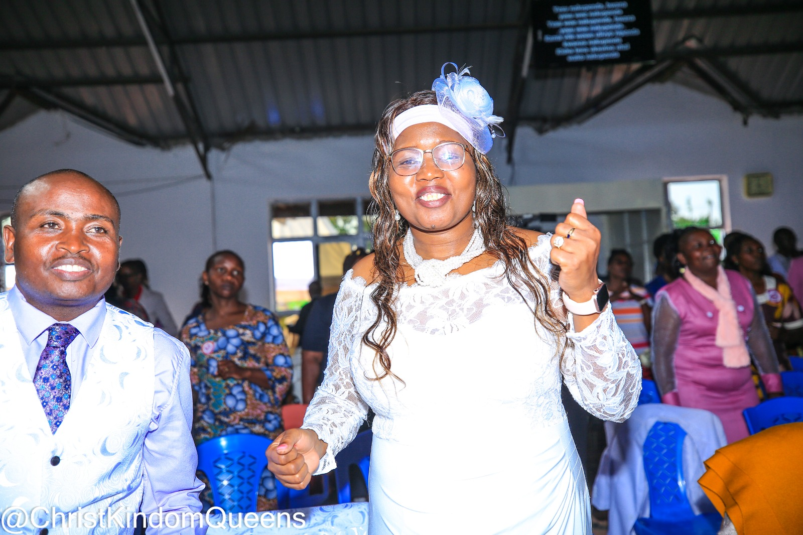
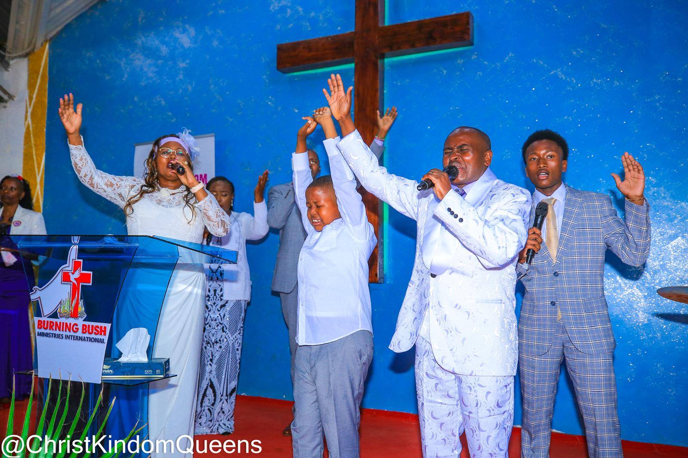

Ministry Hub & Core Portals
Upcoming Events
Join us as we worship, pray, receive the Word of God and participate in ministry conferences happening throughout the year.
Miracle & Healing Service
Held every 1st Weekend of every month. Come expecting healing, restoration and divine encounters.
Kingdom Queens Prayer Rally
Monthly virtual prayer rallies bringing women together for intercession, empowerment and fellowship.
Kenyan Mission
A powerful outreach mission bringing the Gospel, healing and revival across Kenya.
CKQM Healing & Empowerment Conference
Annual conference focused on healing, restoration, deliverance and spiritual empowerment.
Dunamis Conference & Launch
Maua Town
Experience revival, powerful worship, prayer and the official launch of Dunamis Conference in Kenya.
Register NowIndia Mission
International outreach dedicated to preaching Christ, strengthening believers and reaching nations.
Dunamis Annual Conference
Dallas, Texas
The annual gathering for worship, impartation, leadership and revival.
Ministry Hub & Core Portals
Stay connected with God's Awe Worship Ministries through our digital ministry resources. Watch sermons, book counseling sessions, and support God's work through faithful giving.
Sermons Archive
Watch powerful sermons, conferences, teachings and worship services from anywhere in the world.
Watch on YouTubeBook Counseling
Need prayer, counseling or pastoral guidance? Schedule a confidential appointment with our ministry team.
Book AppointmentOnline Giving
Honor God through your tithes, offerings and ministry support. View all available giving methods securely.
View Giving DetailsStatement of Faith
The Holy Scriptures
The Bible is the inspired, authoritative, inerrant, and infallible Word of God. (2 Pet 1:21, 2 Tim 3:16)
The Holy Trinity
One God eternally existent in three separate persons: Father, Son, and Holy Spirit. These three are one. (2 Cor 13:14)
Deity of Jesus Christ
His virgin birth, atoning sacrifice, resurrection, ascension, and literal pre-millennial return to earth to reign for 1,000 years with His saints. (Jn 10:30, Phil 2:6, 1 Thess 4:16-17, Rev 20:4)
The Church Body
The universal and local bodies acting as vehicles for corporate worship and structural fulfillment of the Great Commission. (Eph 1:22-23, Heb 10:25)
Salvation & Holy Spirit
Personal salvation through grace upon heart confession, coupled with the initial evidence of speaking in tongues and the fruits of the Spirit. (Acts 2:1-4, Rom 10:9-10, Eph 2:8)
Water Baptism
Executed strictly via complete water immersion after personal salvation to declare dying to sin and rising with Jesus in newness of life. (Matt 28:19, Rom 6:4)
Divine Healing & Medicine
Obtained through the atonement and active faith in our healer, Jesus Christ. We also firmly believe in professional medical care. (Jas 5:14-15, 1 Pet 2:24)
Satan & Eternal Judgment
Satan is a restrained entity without divine attributes. Demons will be cast out, and along with unwritten names, consigned to everlasting punishment. (Rev 19:20, Rev 20:10-15)
Our Departments
Christ Kingdom Queens Movement
Women's ministry to Equip and Empower all Christian Women to live in God's purpose. Click to explore details and connect.
Family Foundation Wings
Cultivating Christ-centered homes to withstand life's storms and raise resilient children. Click to access counseling and seminar platforms.
Christ Legacy Generation
Our intentional Youth Ministry framework and dynamic growth space for young adults. Click to explore core values and operational objectives.
Rev. Jeremy & Tabitha Heart of Compassion
Direct outreach deployments to less privileged communities, hospitals, orphans, and widows. Click to explore systemic programs.
Church Gallery
Experience the life of God's Awe Worship Ministries through these memorable moments of worship, fellowship, outreach, conferences, and special events.




For tithe and offering do a check to
God's Awe Worship Center or send via Zelle/cash up to 325 2712 983
Get in Touch
Reach out directly via our verified institutional endpoints.